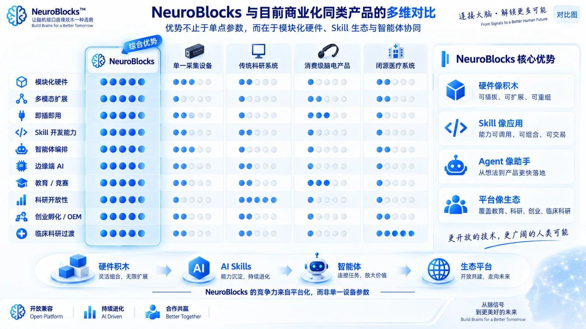
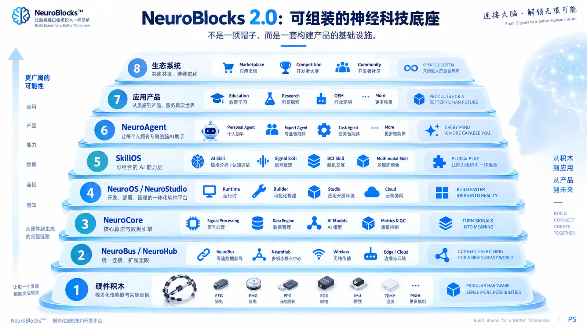
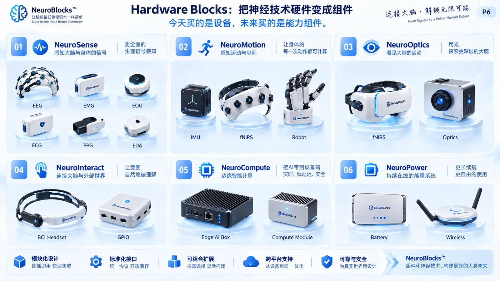
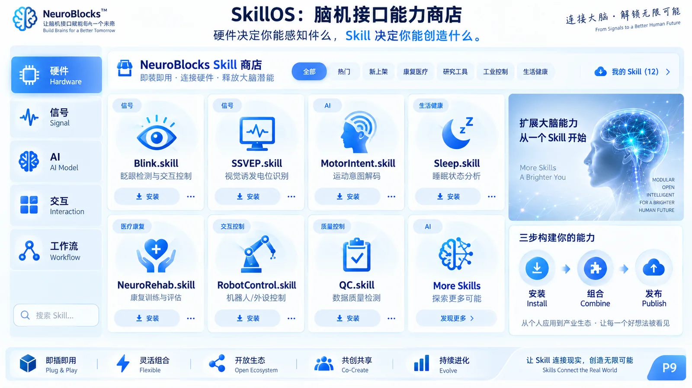
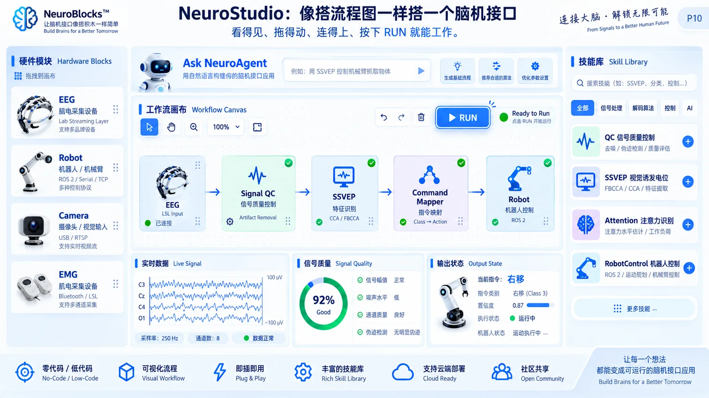
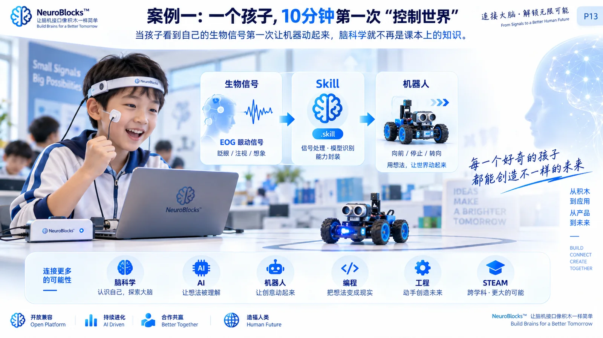
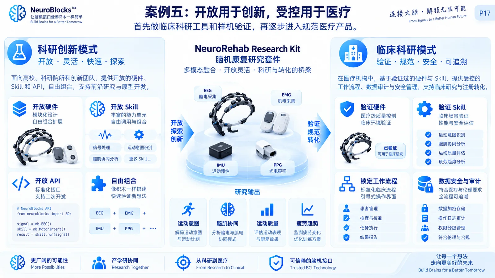
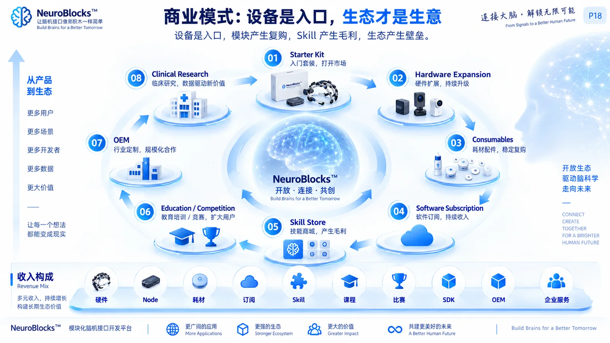
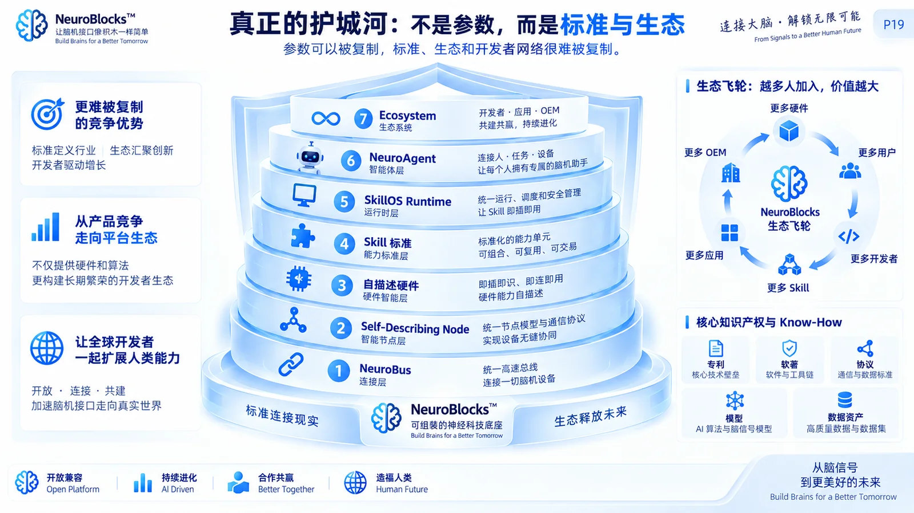

NeuroBlocks
把脑机接口从“重复造设备”变成“组合能力”：硬件像积木、Skill 像应用、Agent 像助手。面向 BCI 创业者、高校科研、儿童教育、科创竞赛与临床科研。

真正缺少的不是更多设备，而是一套可组装的基础设施
今天的脑机接口研发常被驱动、协议、同步、硬件适配与界面开发反复切割。NeuroBlocks 把这些复杂性压到平台底层，让团队把时间重新花在科学问题、产品体验与真实需求上。
八层可重组架构：每一层都是“积木”
一个新产品，不再意味着从零开发；它可以由 Hardware + NeuroBus + Compute + NeuroOS + Skill + Agent + Workflow + 应用模板重新组合。
Hardware Blocks
EEG / ExG / PPG / IMU / fNIRS / GPIO / Robot
NeuroBus + Hub
供电、连接、同步、模块发现、自描述能力
NeuroCore + OS
边缘计算、数据流、Runtime、QC、可视化
Skill + Agent + Ecosystem
能力市场、智能编排、应用套件、开发者生态
Hardware Universe
从“买一台设备”转向“购买能力组件”。节点可以按需求安装、替换、扩展，并通过统一接口被系统自动识别。

把神经科技硬件，做成可插拔能力组件
结构件和外壳优先采用 3D 打印实现快速迭代；电极、AFE、光源/探测器与核心 PCB 仍采用适合量产和安全要求的电子制造工艺。
EEG / ExG
EEG / EOG / EMG / ECG，统一生物电前端。
PPG / SpO₂
心率、HRV、血氧等生理上下文。
EDA / Temp / Resp
自主神经、皮温与呼吸信号。
IMU / Pose
运动姿态、头部位置、步态与运动学。
fNIRS Tx / Rx
第二阶段光学模块，支持灵活光极布局。
GPIO / Robot
机器人、机械臂、LED、Haptic 与外设交互。
ROS / Arduino Bridge
连接 ROS2、Arduino、micro:bit 与 Maker 生态。
NeuroCore Lite
教育、科研、快速验证的低成本边缘算力。
NeuroCore Pro
多模态实时推理与高级科研 / OEM。
Battery Block
可更换电源、低功耗运行与状态监测。
Wireless Block
BLE / Wi-Fi / 本地网络与同步接口。
Trigger / Sync
TTL / Event / 多设备时间同步。

未来开发单位，不是一段代码，而是一项能力
每个 Skill 封装输入、硬件要求、信号处理、模型、输出、UI、算力与权限。用户可以安装、组合、复用和发布，而不必从驱动和脚本开始。

Skill Store
Hardware Skill → Signal Skill → QC Skill → AI Skill → Interaction Skill → Workflow Skill → Application Skill。
从 Prompt → BCI，再到 Prompt → Product
普通用户用自然语言描述需求；系统推荐硬件、加载 Skill、生成 Workflow 和 UI。专业开发者仍可下沉到底层 API、Python、MNE、BrainFlow、LSL 与 ROS。
Ask NeuroAgent
描述你想搭建的 BCI / NeuroTech 产品。
教育 · 眨眼 · 机器人
EOG / EEG + NeuroCore Mini
Blink.skill + RobotControl.skill
Signal → Skill → Command → Robot
实时数据 · QC · 可视化

一套底座，生成完全不同的产品
教育、竞赛负责扩大用户和开发者，科研负责技术验证与品牌，Founder/OEM 帮助产业落地，临床科研为高价值医疗场景建立受控入口。

NeuroBlocks EDU
脑科学 + AI + 机器人 + 工程：让孩子第一次看到自己的信号让机器动起来。
开放用于创新，受控用于临床科研
医疗价值首先来自可重复、多模态、低门槛的研究工具，而不是未经验证的疗效承诺。临床路径采用独立 SKU 与受控工作流，逐步推进验证和注册。
开放创新模式
- 开放硬件组合
- 开放 Skill 与 API
- Raw Data / Python
- 快速原型验证
- 第三方设备桥接
- 教育 / 科研 / OEM
受控临床科研模式
- 验证硬件与固件
- 签名 / 验证 Skill
- 锁定工作流程
- 角色与权限
- 数据安全 / 审计
- 可追溯研究输出

与现有商业系统比较：不是“谁替代谁”，而是产品范式不同
以下只比较官方公开资料中明确描述的能力。NeuroBlocks 一栏为产品设计目标；其他系统均有各自成熟优势，不把“未公开”简单解释为“不具备”。
| 维度 | NeuroBlocks 设计目标 | OpenBCI | Wearable Sensing DSI-24 | EMOTIV EPOC X | Artinis Brite |
|---|---|---|---|---|---|
| 核心定位 | 模块化 NeuroTech 底座 创业 / 科研 / EDU / 竞赛 / OEM / 临床科研 | 开放式 Biosensing / EEG 研发平台 | 研究级无线干 EEG + 辅助生理信号 | 14 通道无线研究级 EEG | 可穿戴、多通道 fNIRS 研究系统 |
| 主要模态 | 规划 EEG / ExG / PPG / EDA / IMU / fNIRS / Context / Interaction | EEG / EMG / ECG + Pulse | 21 EEG + 3 辅助输入；ExG / GSR / RESP / TEMP | 14-ch EEG | fNIRS（脑氧合）+ 集成 IMU；可与 EEG / tES 组合 |
| 结构 / 传感布局 | 节点级可插拔、可换位、可重组 | Ultracortex 开源、3D 可打印；常用 8/16 EEG 电极 | 21 EEG + 3 Aux；DSI-Flex 提供可变传感位置产品线 | 固定 14 通道头戴式布局 | 光极距离与模板可灵活配置；Brite MKIV 可到 27 channels |
| 开发接口 | Skill First + API Open NeuroBus / Skill Spec / Agent | 开放文档、硬件生态、开发工具 | TCP/IP / C API / LSL，兼容 BCI2000 / OpenViBE 等 | 官方软件 / SDK 生态 | OxySoft / Brite Connect；支持多模态研究整合 |
| AI / 工作流层 | SkillOS + NeuroAgent No-Code / Low-Code / Pro-Code | 可通过外部软件和开发生态构建 | 官方采集/分析与第三方科研软件生态 | EMOTIV 软件与开发生态 | 官方采集/分析软件与多模态组合 |
| 边缘端产品化 | 规划 NeuroCore Lite / Pro，本地推理，无需服务器 | 官方核心资料强调采集板与主机/软件生态 | 官方重点为无线采集、实时流与科研集成 | 官方重点为无线 EEG 与软件平台 | 官方重点为可穿戴 fNIRS 与 OxySoft/Brite Connect |
| 独特优势 | 把“硬件 + 算法 + Agent + 应用模板”统一成可交易积木 | 开放、成熟、3D 打印与 biosensing 社区 | 干电极、快速佩戴、辅助传感与科研兼容 | 消费化形态、无线、较成熟软件体验 | 便携 fNIRS、灵活光极、多模态研究能力 |
公开资料核对：OpenBCI All-in-One bundle 为 16 通道 Cyton+Daisy + Ultracortex，并支持 EEG/EMG/ECG 与 Pulse Sensor；Ultracortex 为开源、3D 可打印头架。Wearable Sensing DSI-24 为 21 EEG + 3 auxiliary inputs，并公开 ExG/GSR/RESP/TEMP 与 LSL/API 支持。EMOTIV EPOC X 官方定位为 14 通道无线研究级 EEG。Artinis Brite 为可穿戴多通道 fNIRS，Brite MKIV 官方描述可配置至 27 channels 并兼容 EEG/tES。
Sources: OpenBCI bundle · Ultracortex Mark IV · Wearable Sensing · EMOTIV EPOC X · Artinis Brite
硬件是入口，Skill 与生态才是长期生意
同一供应链可以派生多条产品线；同一用户可以不断扩容模块、算力和 Skill；同一开发者可以把算法做成可分发能力。

从“采购设备”升级为共同定义下一代能力模块
高校、医院、创业团队和赛事组织者都可以进入同一个生态，但参与方式不同。
Design Partner、算法 Skill 共创、公开数据 Benchmark、多模态科研工作流。
临床科研方案、标准化协议、可追溯数据与受控研究流程。
Founder Kit、白牌硬件、SDK、Skill、定制外观、NRE 与 OEM。
EDU、Arena、脑控机器人、AI Challenge 与开发者技能市场。
Platform MVP
NeuroBus 1.0、NeuroHub、核心 Node、NeuroCore Lite、10 个基础 Skill。
First Products
EDU Mini、Maker、Founder Kit；高校与教育 Design Partners。
Ecosystem
Skill Store Beta、NeuroBlocks Challenge、Research Pro、OEM Program。
Multimodal & Clinical Research
fNIRS / Optics、更多第三方节点、受控临床科研 SKU 与规范化验证。
真正的护城河：标准、运行时、生态
电极和单一参数容易被追赶；更难复制的是统一总线、自描述节点、Skill 标准、Runtime、Agent Composer 与开发者网络。

From Idea to BCI Product.
希望一起做 Design Partner、科研合作、教育/竞赛套件、Founder Kit、OEM 或临床科研样机？NeuroBlocks 的目标不是让所有人重新学习一套硬件，而是让更多人能够直接创造。